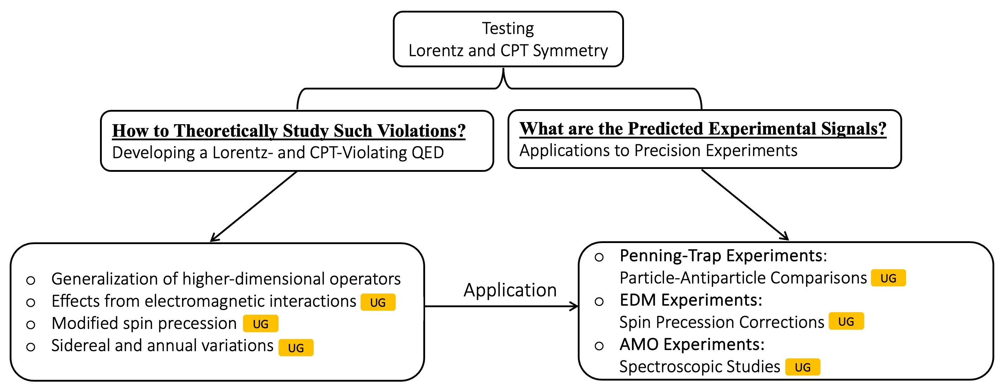

Research Description
Spacetime symmetries play a crucial role in understanding Nature's secrets. In particular, invariances under Lorentz transformations (rotations and boosts) and the combined CPT transformation (C for charge conjugation, P for parity inversion, and T for time reversal) are foundations of the two current best theories describing Nature, General Relativity (GR) and the Standard Model (SM). Although experiments to date indicate that Lorentz and CPT symmetry provides an accurate description of nature, it became clear in the late 1980s that tiny violations of Lorentz and CPT symmetry could appear theoretically as natural features of candidate models that unifies gravity with quantum physics. Any such tiny violation would lead to profound revisions in our current understanding of space and time (see this from Prof. Kostelecký’s webpage for a comprehensive background information on Lorentz and CPT violation).
Over the last three decades, tests of Lorentz and CPT symmetry have turned from theoretical ideas into a formal field in which theorists and experimentalists worldwide explore possible signals that could reveal the Nature's secrets.
Motivated by this, my research focuses on the exciting theory-experiment bridging area of testing
Lorentz and CPT symmetry. Specifically, in the context of matter-field interactions,
my students and I are working together to address the following two questions:
- How to theoretically study possible Lorentz and CPT violation?
- What are the predicted experimental signals?
The first question requires the development of a Lorentz- and CPT-violating
quantum electrodynamics theory to characterize different Lorentz and CPT violation,
while the latter focuses on the applications of the theory to current and forthcoming precision experiments
to identify possible symmetry-violating signals. Here is a brief schematic view of my reserch:

Special Projects for Undergraduates
A diverse set of research projects related to precision tests of spacetime symmetries available for undergraduates at different levels, many of which could lead to possible publications. Interested students are welcome to send me an email or talk to me directly.
Group Members
![[img: title image - Yunhua Ding]](./images/Yunhua Ding.jpg)
Yunhua Ding
Current students
![[img: title image - Isaac Blacklow]](./images/Isaac Blacklow.jpg)
Isaac Blacklow '25, Claremont McKenna College
Sept. 2021 – present
Past students
![[img: title image - Teague Olewiler]](./images/Teague Olewiler.jpg)
Teague Olewiler '24, Gettysburg College
March 2021 – Aug. 2021
![[img: title image - Mohammad Farhan Rawnak]](./images/Mohammad Farhan Rawnak.jpg)
Mohammad Farhan Rawnak '23, Gettysburg College
Jan. 2020 – Aug. 2021
Publications
(See also on arXiv. Undergraduate students are denoted by *.)
-
Penning-Trap Searches for Lorentz and CPT Violation,
Yunhua Ding, Teague D. Olewiler*, and Mohammad Farhan Rawnak*,
Symmetry 13, 1703 (2021).
arXiv:2109.07597
-
Lorentz and CPT Tests with Charge-to-Mass Ratio Comparisons in Penning Traps,
Yunhua Ding and Mohammad Farhan Rawnak*,
Phys. Rev. D 102, 056009 (2020).
arXiv:2008.08484
-
Lorentz and CPT Tests Using Penning Traps,
Yunhua Ding,
Symmetry 11, 1220 (2019).
arXiv:1910.00456
-
Comparative Penning-Trap Tests of Lorentz and CPT Symmetry,
Yunhua Ding,
in R. Lehnert, ed.,
CPT and Lorentz Symmetry VIII, World Scientific, Singapore, 2020.
arXiv:1906.04364
-
Testing Lorentz and CPT Symmetries in Penning Traps,
Yunhua Ding,
in V.A. Kostelecký, ed.,
CPT and Lorentz Symmetry VII, World Scientific, Singapore, 2017.
arXiv:1610.09357
-
Lorentz-Violating Spinor Electrodynamics and Penning Traps,
Yunhua Ding and V.A. Kostelecký,
Phys. Rev. D 94, 056008 (2016).
arXiv:1608.07868
-
Global Solutions and Finite Time Blow-up for Damped Klein-Gordon Equation,
Runzhang Xu and Yunhua Ding,
Acta Math. Sci. 33, 643 (2013).